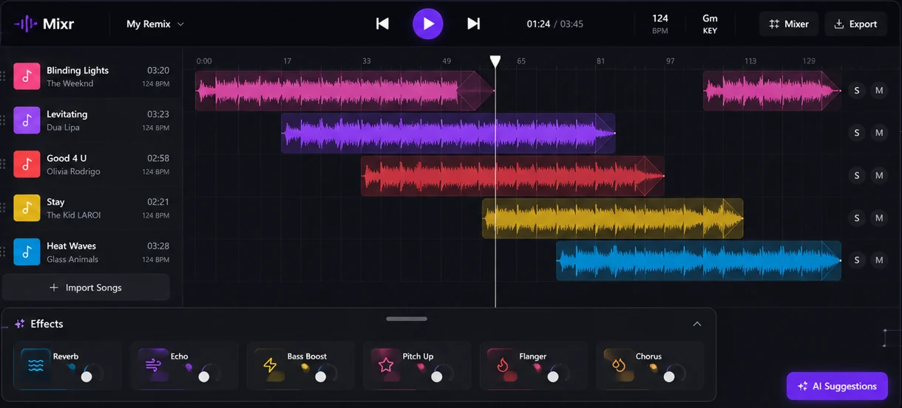
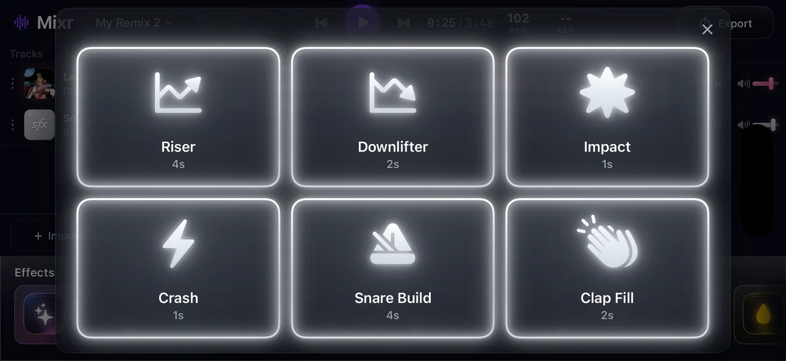
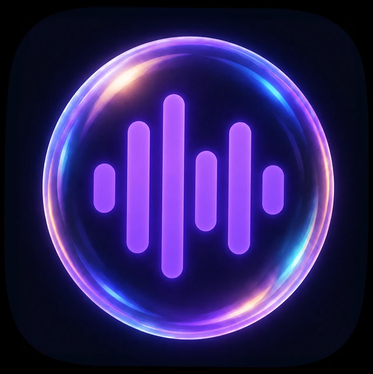
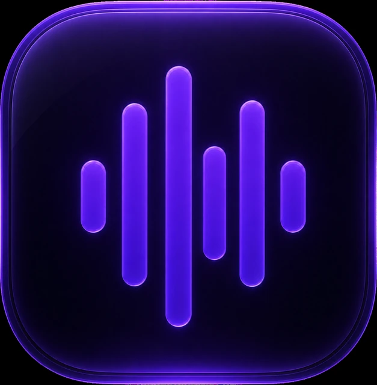
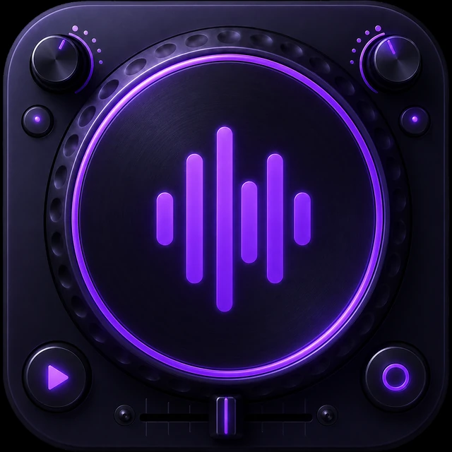
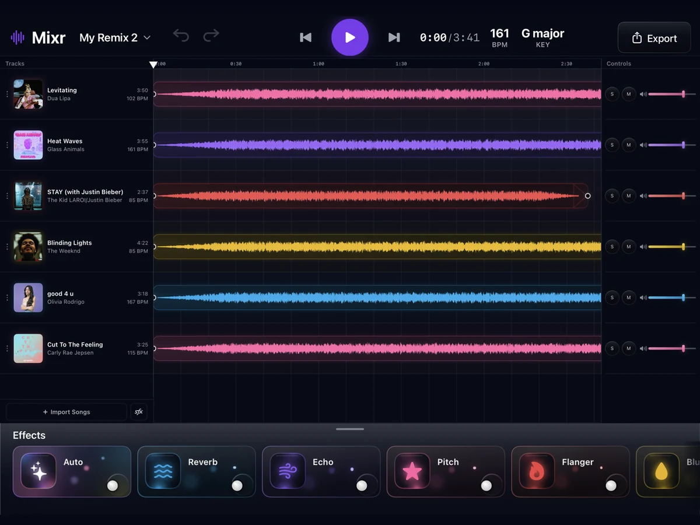
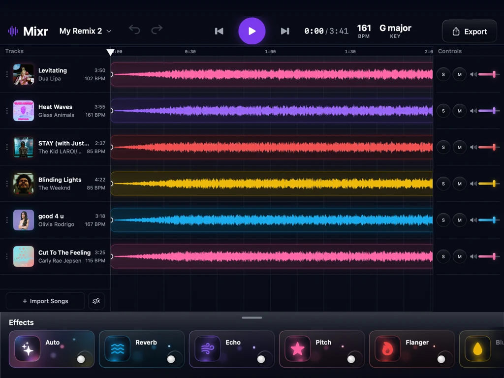

DJ software can be intimidating. Mixr makes remixing easy by using familiar patterns from video editing apps.
Building the app was an experiment in designing by building: if I could collapse the design and engineering gap by designing as I go.
I wanted to learn to DJ, but I never learned music theory, played an instrument, or remixed a song. I did know how to code. So instead of buying a controller, I started building an app.
Question the Whole Project Answers
Can coding agents help me design and build a software for something I know nothing about?
02 — Ideation
Choosing the right references.
I wanted to give beginners a familiar place to start. The reference wasn't DJ software. It was video editors like CapCut, Final Cut Pro, Premiere Pro, DaVinci Resolve, and GarageBand.
These products share a familiar interaction model: import media, arrange clips on a timeline, edit them directly, preview, and undo.
CapCut
Set the benchmark
“As simple as CapCut” was in the first prompt. It gave me actions like split, duplicate, and delete that I needed to incorporate in timeline editing.
Premiere Pro
Shaped the inituition
With a background in video editing, this was the editor I knew best. Drag-and-drop and the SFX (sound effects) library were all inspired by Premiere Pro.
GarageBand
Gave the unit
Taught me to use the music's unit rather than the clock's. Transitions are measured in beats rather than seconds so timing aligns with tempo.
I started by asking ChatGPT for mocks. I find it has the best image generation capabilities and doesn't return UI that looks AI-generated.

Day 1. Everything below is a downstream of this image.
I knew what I wanted to change. "AI Suggestions" was a floating button and belonged in the effects tray. It should also be called "Auto" like iPhone photo editing. The "Mixr" button on the top had no indication of what it did. It needed to go.
But the layout was right, and I never looked back. Controls on the sides, timeline in the middle, effects along the bottom. It felt intuitive because it resembled video editing software, not a DJ's.
The interface, today's build
Recorded on simulator device. Each waveform gets its own color from the brand palette.
03 — Behavior
Three pivotal points in defining behavior. Trying not to get sued.
I considered copyright before designed anything. Mixr can’t stream from a library and it can’t host anyone’s masters, so the whole thing is built around import and export: you bring your own files in, you take your remix out, and nothing lives on a server in between.
For building and testing it I pulled tracks off Spotify as files through spotdown.org, which is also the honest answer to how a beginner gets audio into an app like this at all.
Split, duplicate, delete, speed and drag are the whole editing language. Naming them was easy. Deciding how they behave took two days and was the hardest design work in the project.
Split, Speed, Duplicate, Delete — the whole editing language, on the clip itself. Then the split, and the drag that follows it.
Drop into a clip body
01 · RestingTwo clips, one lane.
02 · LiftedDetaches, scales 1.04, follows the cursor.
03 · Split previewedThe destination shows where it will cut.
04 · SandwichedDestination splits; the clip lands between both halves.
Drop a clip into the body of another and Mixr splits the destination and inserts between the halves, rather than shoving it aside. Video editors have done this for years — but they make you choose it first, with a modifier for insert and a plain drag for overwrite. Here there is no mode to pick.
Hold a modifier, or infer it from where you let go?
Premiere and Final Cut both do the insert edit, and both make you ask for it — a modifier held during the drag switches between overwrite and insert. It is precise, it is teachable, and it is a mode.
Rejected: the modifier. A beginner does not know the mode exists, so they never find the behaviour; and on a touch screen there is no key to hold in the first place.
Chosen: the drop position is the choice. Let go over a clip’s edge and it snaps flush; let go over its middle and it cuts in. Nothing to hold, nothing to learn — the two intentions already live in two different places on screen.
That only works if the reading of “where you let go” is never surprising. Predictability comes from resolving the drop in a fixed order rather than from one clever rule. The pointer is tested against five cases in priority, and the first that matches wins.
Ghost restoreReleased within the snap zone of where it started — put it back, ripple nothing.
Edge snapInside a neighbour's 10 pt edge zone — snap flush before or after it.
Literal gapLeading edge landed in empty space — leave it exactly where it was let go.
Insert into bodyPointer inside a clip, past its edge zones — split there and sandwich.
Free placementAnything else — place it and let the lane reflow.
Try the five rulesDRAG A CLIP · OR TAB AND USE ARROW KEYS
Ghost restoreEdge snapLiteral gapInsert into bodyFree placement
Pick up a clip to see which rule resolves.
This is not an animation of the behaviour — it is the behaviour. resolveClipDrop is ported line for line out of MixrTimeline.swift, including the priority order, the hysteresis that stops the result flickering between two rules mid-drag, and the minClipLengthUnits clamp that stops a split leaving a two-unit sliver. Constants are the shipped ones: a 10 pt snap zone, 8 pt of hysteresis, 20 pt of neighbour shift, 0.28 ghost opacity, a 1.05 lift. The hatched bands are the edge zones, drawn only while you are dragging.
The one thing to try: pick up the blue clip and let go over the middle of the purple one. Then do it again, but let go near the purple clip's left edge. Same gesture, two different intentions, and you never told the app which one you meant.
The preview is the contract: whatever the neighbours animate to while you are dragging is exactly what happens when you let go.
The timeline is only honest if the sound follows it. Splitting a clip splits its audio; undo restores both. Otherwise the two drift apart and the app starts lying to you.
Track volume lives at the mixer; per-clip effects live before it. Keeping them on separate stages is what lets you turn a track down without undoing the echo you put on one clip of it.
04 — Decisions
What I left out is what made the rest possible.
No decks, no crossfader, no hot cues, no per-channel EQ. Every one is a real DJ tool, and every one asks the beginner to learn the booth before they can hear a result.
I built it in passes, each starting with a freeze list — what not to touch. The failure mode of moving fast is a fix that quietly redesigns three things you were happy with.
EffectsCLICK A CARD · OR TAB AND PRESS ENTER
Rebuilt in CSS from EffectCard.swift — 152×66 at an 11px radius, a 46px icon tile, 13px bubbles, and per-effect glow centres. Scroll for the rest.
Resting glow, per card
Auto1.000
Reverb1.000
Echo1.000
Flanger0.9025
Pitch0.855
Blur0.7695
Not one glow value shared across six cards. Yellow reads brightest at any given number, then red, then pink, so each is pulled back until the row looks evenly lit. Auto gets pushed the other way on selection — it is the card I want people to press.
The glow does not stop at the card’s edge
Rebuilt rather than filmed. The capture of this was 1046px wide rendering into 1606 device pixels on a retina screen — stretched half again past its own resolution, and no bitrate fixes detail that was never recorded. EffectCardSpillGlow draws outside the card’s bounds on purpose (w+48 × h+18, blurred 11) and is never clipped, so a lit card washes onto the two beside it. Echo is selected here; watch Reverb on its left and Pitch on its right pick up the purple. That spill is the third thing in the X post, and it is the one that only ever looked right in motion.
The same control in the app. The cards above are CSS, rebuilt from EffectCard.swift and GlassCardModifier.swift — this is what they are rebuilt from.
Expose the parameters, or pick the one number that matters?
Every real audio plugin opens onto a wall of controls. Each is honest, and each asks the beginner to already know what a Q curve or a wet/dry ratio does before they can hear anything change.
Rejected: the parameter panel. Not because it is wrong — it is what a professional wants — but because it moves the moment of feedback behind a lesson. The first thing you touch should make a sound you can judge.
Rejected — one effect, five parameters
0.62
0.38
18ms
45%
0.71
Five numbers, none of which tell you what the room will sound like. This one is a drawing — it never got built.
Chosen — one intensity, three rooms
45%
Live — drag the slider or pick a room. Rebuilt from EffectControlTray.swift. The presets are not shortcuts to a hidden panel; they are the panel, and each one just moves the single slider to a value that sounds like its name. Flanger and Blur ship with no presets at all — slider only.
Chosen: one intensity per effect, presets where a name is more useful than a number. The set stays small, named and preset-backed — and every control produces a sound before it asks a question.
Hear the effectsEACH ONE AT 100% · SAME LOOP EVERY TIME
OriginalThe dry loop. Nothing applied — this is what the five below are doing it to.
ReverbPuts the loop in a room. Watch the tail after the last hit — that is the room answering back.
EchoRepeats one beat behind, not one second. The repeats are the extra humps in the shape.
PitchUp a fifth, same length. Shifting pitch without changing tempo is the whole trick.
FlangerA copy of itself a few milliseconds behind, swept slowly. The whoosh is the two copies cancelling.
BlurA low-pass closed most of the way. Everything bright goes, and the hats disappear first.
The loop is synthesised for this page — 103 BPM in B minor, four-on-the-floor with an octave-jumping bassline and claps on the backbeat, in the neighbourhood of what people actually remix. Mixr was built against commercial masters, and none of those can ship on a public site, so the page writes its own source and runs the five effects over it. Every clip is levelled to the same peak: an A/B where one option is simply louder isn’t an A/B. What changes is timbre and time, and that survives levelling. Reverb is a Freeverb topology at .965 feedback, Echo is one beat of delay at .58, Pitch is an overlap-add shift of +7 semitones, Flanger sweeps a 1–6 ms delay, Blur is two cascaded low-pass biquads at 420 Hz. See scripts/mixr_effect_clips/generate.py.
The red card took longest to name. Warmth described a quality rather than an action. Haze was at least picturable. It ended up Flanger — the one place I let a technical term stand, because no everyday word for it isn’t a lie.
Why an audio effect is called Blur
I borrowed the name from visual editing so a beginner can predict what it will feel like before hearing it. Someone who has never heard the phrase “low-pass filter” has definitely blurred a photo, and the guess they make from the word is the right one.
Transition duration
Duration
Beats, not seconds — suggested by people following the build on X, and obviously right once said out loud. A transition is counted in the music's own unit.
The pill is tinted with the track's colour, not left neutral. TLTransitionSettingsSegmentedControl takes a trackColor and threads it through the whole stack — body fill at .13, the rim gradient, an inner highlight at .12, and both shadows at .08. It is set to the purple track here. Plain glass would have been easier and slightly cleaner, and it would have thrown away the one thing the control says before you read it: which lane you are about to change.
The same control in the app.
Identity
#7C3AED
#FF5FA2
#8B5CF6
#EF4444
#EAB308
#0EA5E9
#050816
Purple is the brand; the other five are the track colors, assigned in order as songs are imported. The near-black ground is what makes six of them legible at once.
The app carries a real design system, and it was the first thing built — before a single screen. Tokens, then components, then layouts. Doing it in that order is what let a coding agent make changes for weeks without the interface drifting.
What follows is that system rebuilt in the browser, in the same order the app’s own DesignSystemPreviewView lists it. Every number is read out of the Swift, not measured off a screenshot.
Design systemREBUILT FROM THE SOURCE · NOT A SCREENSHOT
Color palette · MixrColors.swift
Surfaces & text
Background#050816
Background Secondary#080B16
Surface#111827
Elevated Surface#171E2E
Divider#2A3142
Text Secondary#9CA3AF
Accent
Primary Purple#7C3AED
Secondary Purple#8B5CF6
Two purples, and the app never invents a third. Primary is the brand and every committing action; secondary is the same hue lifted for gradients and glows.
Waveform base
Pink#FF5FA2
Purple#8B5CF6
Red#EF4444
Yellow#EAB308
Blue#0EA5E9
Handed out in this order as songs import. Five, because a sixth lane is where the colours stop being tellable apart at clip size.
Typography · MixrTypography.swift
MixrDISPLAY LOGO · 24 / SEMIBOLD
EffectsSECTION TITLE · 15 / SEMIBOLD
Blinding LightsSONG TITLE · 13 / SEMIBOLD
Adjust reverb and echo levelsBODY · 12 / REGULAR
Import SongsBUTTON · 12 / MEDIUM
1:24 / 3:45TIMECODE · 12 / MEDIUM / MONOSPACED
The Weeknd · 03:20 · 124 BPMMETADATA · 10 / MEDIUM
KEYCAPTION · 9 / REGULAR
Eight styles, rendered here at their real sizes and weights — the row heights are the specimen. Timecode is the only monospaced one, because a clock that changes width as it counts is the fastest way to make a transport bar feel cheap. Nothing in the app sets a font size inline; a view names a style and gets all four properties.
Glass · GlassCardModifier.swift
Defaulttint .28 · mat .08 border white .06
Selectedtint .30 · mat .07 border purple .42
Elevatedtint .34 · mat .10 border white .08
Strongtint .42 · mat .12 border white .10
Four levels, and the only one that changes hue is Selected — its border goes purple rather than getting brighter. That is the entire selection language of the app: a card, a preset, a track row and a toggle all say “this one” the same way. edgeHighlightOpacity also jumps .16 → .24 and lowerReflectionOpacity .08 → .36 on selection, which is what makes the lit card look like it caught the light rather than turned on.
Buttons · MixrButtonStyles.swift
Live — press them. Primary is the only gradient fill in the app and it is spent on one thing per screen. Everything else is Glass Default, which is why the bar reads as one material with a single bright object in it. Metrics: MixrRadius.button 12, icon 20, MixrLayout.buttonPaddingH 16 / V 10, iconButtonSize 40, toggleButtonWidth 32. Solo and mute are the toggles — selected state is the purple border again, not a fill.
Radius & spacing · DesignTokens.swift
MixrSpacing — xxs 2 · xs 4 · sm 8 · md 12 · lg 16 · xl 24. MixrRadius — glass 16 · button 12 · icon 20 · toggle 16 · waveform 10. WaveformStyle — lane height 48 · corner 10 · inner padding 8 · clip opacity 0.55 · bar 2 at 1 spacing · fade 15%.
Six spacing steps and five radii for the whole app. A component that needs a seventh is usually a component that is wrong.
Matching the brand.
The sound-effects menu started as a ChatGPT recreation, and it was a good starting point — the grid, the durations under the names, the icon-over-label stack all survived. What did not survive was the finish. Every tile glowed the same hard white, and white is not a colour this app owns.
Rejected: the white version. It looks premium in isolation and it belongs to nothing. Drop it back into the app and it is the only surface not speaking the same language as the effect cards, the waveforms and the transport.
Where it started — the ChatGPT recreation

Uniform white glow on all six, at full strength, on every edge.
Where it landed — rebuilt here from SFXComponents.swift
Riser4s
Downlifter2s
Impact1s
Crash1s
Snare Build4s
Clap Fill2s
Not a screenshot — a rebuild at the shipped pt sizes, so a 200×138 card here is a 200×138 card on device. Charcoal-indigo glass (#1B1F2E → #101421), a 0.85px white rim at .16, a pearl icon ramp (#F8F5FF → #E6DCFF) carrying a tight white core glow at 2.8 and a pearl bloom at 6, and the duration in sfxMenuLavender#C9B9F4 at .88. The white is still there — it just moved into the icon, where it reads as light rather than as a colour choice, and everything around it went lavender to match the rest of the app.
Chosen: the same charcoal-indigo glass the effect cards use, with the pearl tile as the only bright object. A component can be beautiful and still be wrong, and the test is not how it looks on its own — it is whether you can tell it belongs to this app with the label covered up.
And the fun one: three app icons.
The last decision, and the only one I made purely on instinct. All three carry the same waveform mark — the argument was about what surrounds it.
SHOWN AT THE SIZE THAT ACTUALLY DECIDES IT

DiscoInspired by Spotify's disco takeover. An iridescent bubble around the mark.Rejected

SimpleThe mark, the glass tile, nothing else.Chosen

DJ controllerInspired by the Frig app icon. A whole turntable, knobs and crossfader included.Rejected
Shown here at 128 px and again at 40. The small one is the real test — nobody chooses an app icon at the size a designer draws it at.
Rejected: both of the interesting ones, for the same reason. The disco bubble is the prettiest thing I made for this project and it turns into a grey smudge at 40 px. The controller is worse — it is a picture of exactly the equipment the whole app exists to avoid, and it promises a booth to someone who opened this because they didn’t want one.
Chosen: the plain one. It survives the small size, and it is the only one of the three that doesn’t make a promise the app then has to talk you out of.
05 — Coding Agents
How I worked with coding agents.
I religiously used Plan Mode.
For big tasks, I used Plan Mode. No code changes until I reviewed and approved the plan. I used this heavily for my last two phases: responsive layout and accessibility testing. Auditing stopped agents from undoing previous work and changing components I already finalized.

iPad

Mac laptop
One focus per agent.
I started a new chat for each major component like effects cards, drag-and-drop, SFX, etc. Each agent had less to remember. It stayed focused and learned that component’s behavior in depth.
Claude Code vs. Codex vs. Cursor
Each is good at different tasks. Codex is good at planning, research, and visual exploration. Claude Code is good at grunt work coding. Cursor is if I don't want to switch between an agent chat and code editor. My best setup is to talk through plans with ChatGPT's free tier, then pay for Claude Code or Cursor to build.
06 — Results
Finished building, waiting approval.
The app is fully built. I’m now waiting for approval from the Apple Developer Program to release TestFlight Beta. Everything so far reflects my own judgment. The real test is whether other people can use and understand Mixr.
The intimidating part of learning a new skill is the interface scaring you away. Building Mixr taught me anyone can do it: not just DJing, but building an app. So get on a coding agent and make something that excites you!
🔗Read my Mixr journey on X|This is also my first time coding in Swift! Coding agents are just that cool.